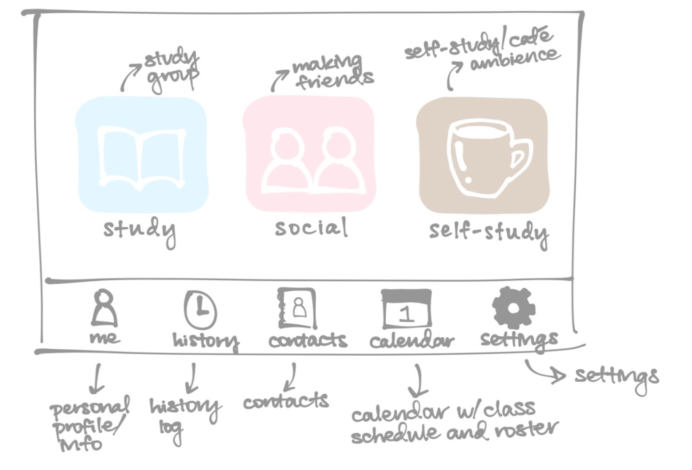
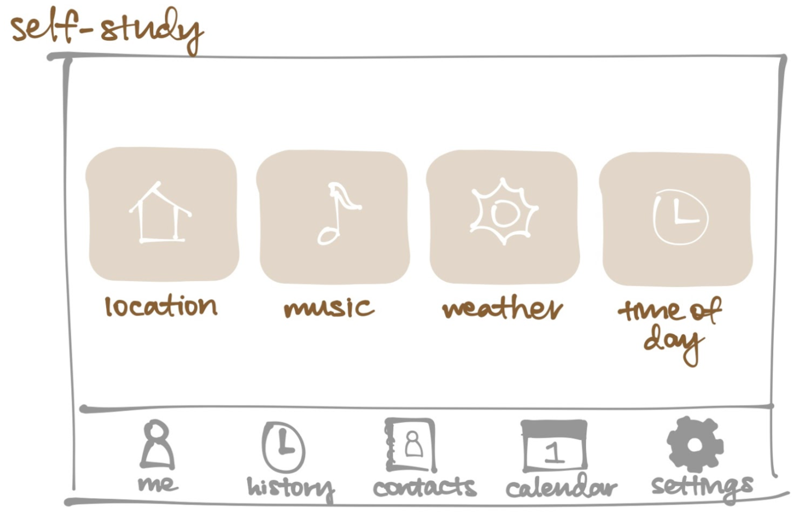
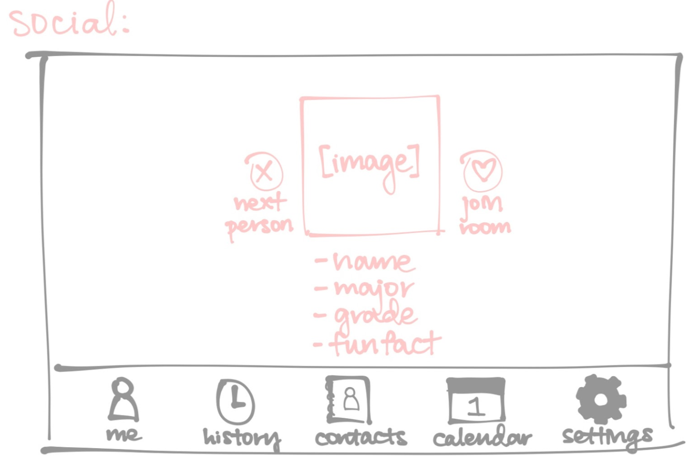
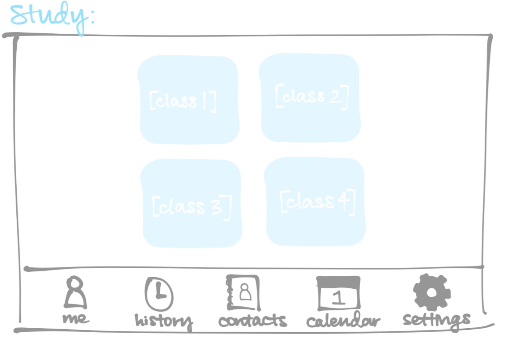
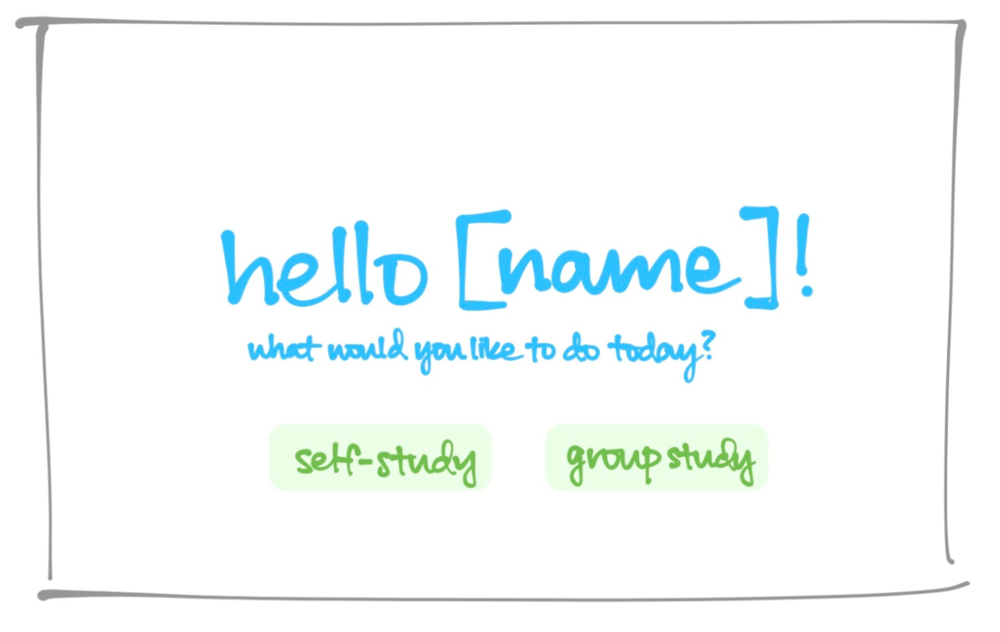
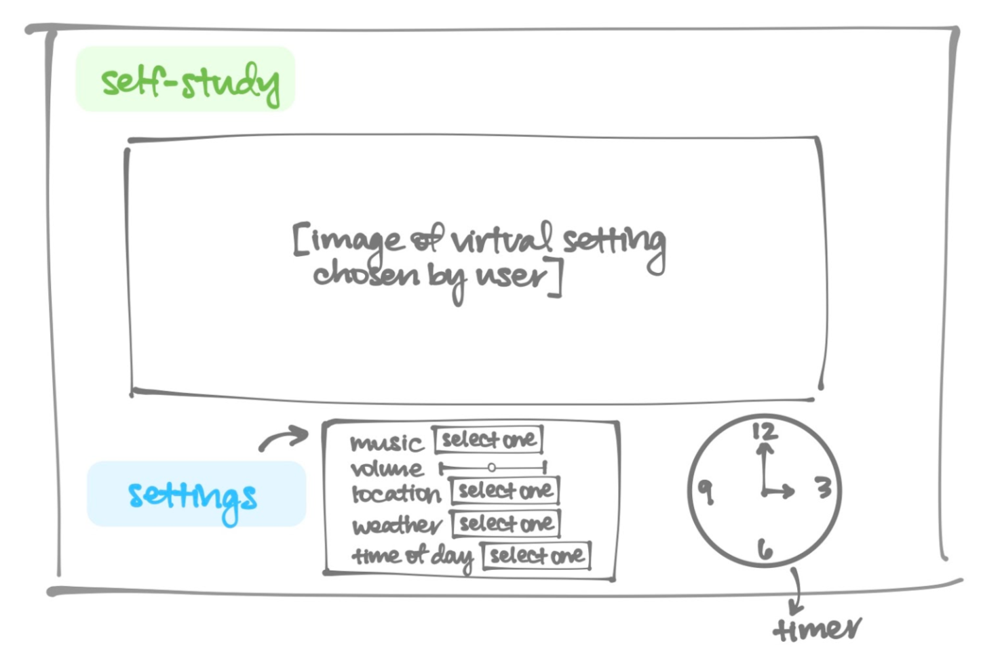

Ideation
Scenarios
Scenario 1: A Wellesley student looking to create a more effective studying environment
Wanda feels that studying alone remotely is ineffective and distracting. Since classes turned remote, she stays in her apartment alone to do her assignments and studies primarily at her desk in her bedroom. She misses the ability to work in common spaces or cozy coffee shops, with a buzzy atmosphere. She finds she’s not able to concentrate on her work as easily. She is seeking a way to recreate a communal studying experience (akin to being in a common or public space) from the safety of her home. She decides to try going on StudySib, and uses the Self Study option to set the ambience and music of her study environment to recreate the experience of being at a coffee shop at home.
Scenario 2: A Wellesley student looking to form friendships
Wendy misses the casual and spontaneous nature of making friendships through in-person classes. She feels that remote classes do not nurture genuine friendships and that those relationships often feel forced and will not last past the semester. She is looking for a more effective way to form genuine friendships in a remote learning environment. After class, Wendy logs on to StudySib, clicks on Friend Finder, and matches with other students with similar intentions of conversing and forming friendships. After matching with another student, she messages them using an ice-breaker prompt generated by the app.
Scenario 3 - A Wellesley student looking to join a group study session remotely
Wendy has a hard time choosing someone to reach out to while in her synchronous remote classes. Some students don’t have their cameras on, and others don’t speak during class at all. These factors make it difficult for her to gauge who might be interested in socializing and studying with peers. After class, Wendy logs on to StudySib, clicks on the Group Study page to see available study rooms. She joins a room, to see there are several students conversing and working. She introduces herself to everyone and then begins working with them on the homework assignment, occasionally taking breaks to chat about random topics.
Design Directions and Rationale
Design 1




This is the first preliminary design of our user interface. It consists of three modes: study, social, and self-study. This design mainly utilizes icons to maintain a sense of visual aesthetic and it focuses on user satisfaction with its interactable elements— most notably the dating-app-inspired feature for making friends.
Design 2


This is the second preliminary design of our user interface. It consists of two modes: solo and group. This design mainly focuses on learnability and efficiency as it relies on text and labels to guide users through the app, which leaves minimal room for confusion as to what each button leads to.
Summary of takeaways from in-class design review session
Based on our in-class design review session, we had the following takeaways and changes:
- Guidelines to establish expectations for social etiquette - To address the issue of ensuring Wellesley students are informed about the social expectations of participating on our platform (e.g. being kind to each other, no discrimination), we decided to add a page of guidelines about appropriate use that all users will be taken to immediately after sign-up
- Greater transparency for joining a group study room - To address the uncertainty that can come with entering a virtual space, we wanted to add a preview for the rooms. The preview would include 1) list of occupants 2) the “vibes” of the room in the form of an emoji to describe the mood (e.g. relaxed or very focused) 3) whether or not they’re on study break 4) the ability to ‘lock’/’unlock’ a room to indicate if anyone could join it
- More fun, Wellesley-specific features, such as a map of campus to represent the virtual study rooms - Before, we just had a bunch of rooms that students could join. We decided to make this more engaging by making all the ‘rooms’ a part of a larger map representing buildings on Wellesley campus


 (3) (1).png)
.png)